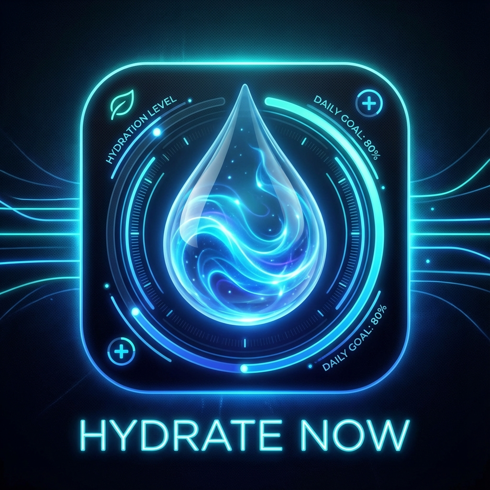
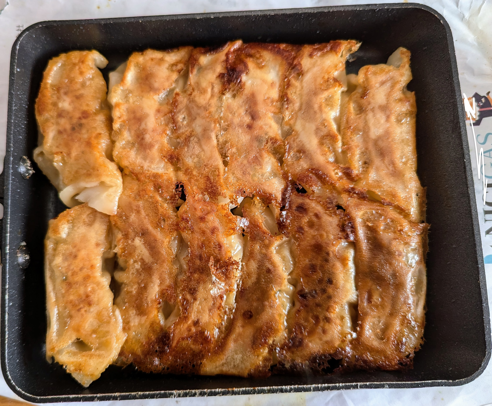
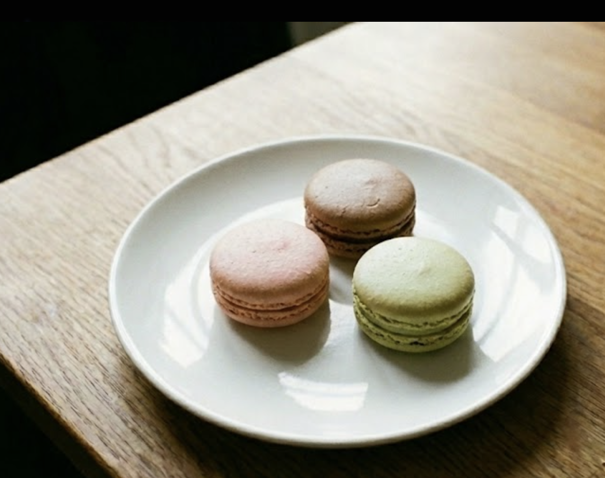
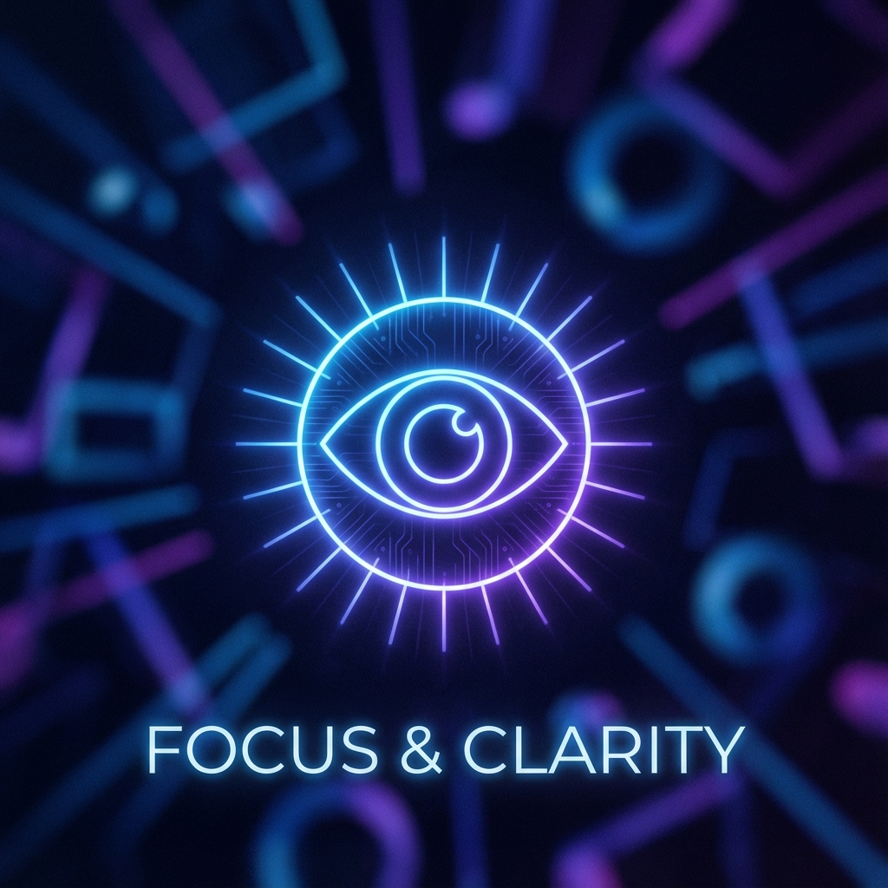
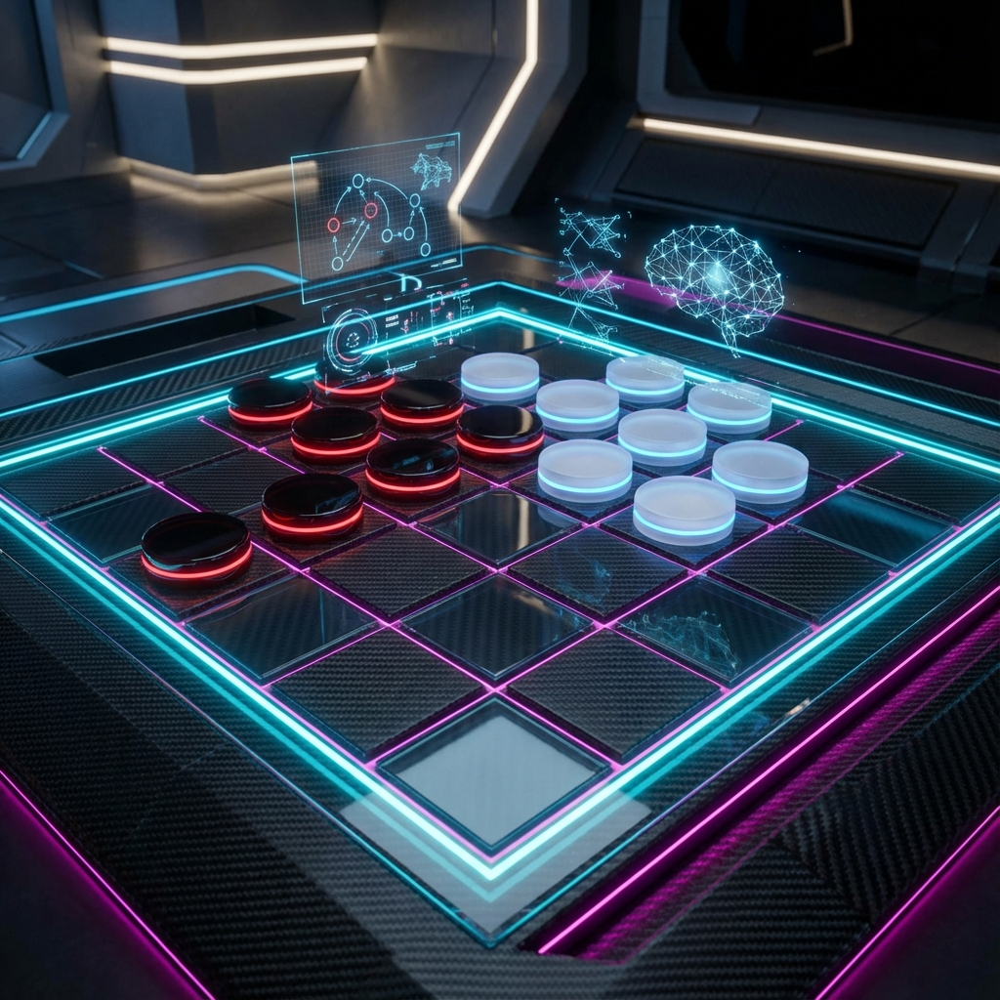

About Me
植田 智洋
筑波大学大学院エンパワーメント情報学の修士1年
AIや3D復元の研究を進めながら、ハッカソンや個人開発で新しいアイデアを形にすることを楽しんでいます。研究では「テクスチャレス物体の3D形状復元」というテーマに取り組んでおり、AIを用いた最新の技術と古典的なアルゴリズムを組み合わせて、より正確な3次元形状の復元を目指しています。
ハッカソンではチームで意見を出し合いながら、短い期間でも使ってもらえるものを作る経験をしてきました。個人開発ではUnityやPythonを使って、思いついたものを自由に作ってみるのが好きです。
また、趣味の料理では味の組み合わせを考えたり、工夫しながら形にしていく過程が好きで、その「つくる楽しさ」は開発にもつながっています。


Research
Selected Works



Skills
Languages
Python, C#, Swift, Kotlin
Development
Web Development, Game Logic, Automation Scripts, AI Basics
Tools
Unity,VS Code, Docker, Linux Environments